Deciphering Big Data

Learning Summary
The "Deciphering Big Data" module provided a comprehensive exploration of the critical components and techniques used in managing and analyzing large datasets. Here is detailed summary of the key learnings from the module:
Fundamental Concepts of Big Data:-
Principles and Types of Big Data: Gained an understanding of the foundational concepts and diverse categories of big data, which are crucial for grasping the scale and complexity of data involved in modern analytics.
-
Big Data Architectures: Explored various architectures that enable efficient processing and storage of big data.
-
Characteristics of Data Types and Formats: Examined the different types of data (structured, semi-structured, unstructured) and formats (e.g., CSV, JSON) that big data encompasses.
-
Data Wrangling: Developed skills in transforming and mapping raw data into a more useful format, which is essential for further analysis.
-
Parsing Source Data: Learned techniques for extracting data from common file formats used in business environments, such as Excel spreadsheets and PDF documents.
-
Data Handling with Python: Enhanced proficiency in using Python, a powerful programming language, for various big data operations including data manipulation and cleaning.
-
Fact-Finding and Data Investigation: Cultivated the ability to conduct thorough investigations to uncover insights and validate data integrity throughout the analysis process.
-
Web Scraping: Acquired techniques for extracting data from the web, enabling the collection of real-time data from various online sources.
-
Data Standardization and Normalisation: Learned methods to standardize and normalize data, ensuring consistency and accuracy in datasets.
-
Data Modeling: Gained insights into creating abstract models that organize elements of data and standardize how they relate to one another and to properties of the real world.
-
DBMS Fundamentals and Structure: Studied the fundamental concepts and structures of Database Management Systems, essential for efficient data storage, manipulation, and retrieval.
-
Compliance and Regulatory Frameworks: Explored the legal and ethical considerations in big data, understanding the importance of complying with data protection laws and regulations to safeguard information and maintain public trust.
Python Activities:
Throughout the module, we explored a variety of data management techniques and functions in Python, including:
- NumPy
- Create NumPy array
- Create an array of floating type elements
- Adding Two NumPy Arrays
- Mathematical Operations on NumPy Arrays
- Advanced Mathematical Operations on NumPy Arrays
- Generating Arrays Using arange and linspace
- The Dimension, Shape, Size, and Data Type of the Two-dimensional Array
- Zeros, Ones, Random, Identity Matrices, and Vectors
- Reshaping, Ravel, Min, Max, and Sorting
- Indexing and Slicing
- Conditional Subsetting
- Array Operations (array-array, array-scalar, and universal functions)
- Stacking Arrays
- Pandas Dataframe
- Visualization with NumPy and Pandas
- Create simple scatter plots of age versus weight
- Generating Random Numbers from a Uniform Distribution
- Generating Random Numbers from a Binomial Distribution and Bar Plot
- Generating Random Numbers from Normal Distribution and Histograms
- Calculation of Descriptive Statistics from a DataFrame
- Built-in Plotting Utilities
- Subsetting, Filtering, and Grouping
- Detecting Outliers and Handling Missing Values
- Concatenating, Merging, and Joining
- Useful Methods of Pandas
- Randomised Sampling
- The value_counts Method
- Pivot Table Functionality
- Sorting by Column Values
- Flexibility for User-Defined Functions with the apply Method
- Reading Data from Different Text-Based
- Reading from a CSV File where Delimiters are not Commas
- Bypassing the Headers of a CSV File
- Skipping Initial Rows and Footers when Reading a CSV File
- Reading Only the First N Rows
- Combining Skiprows and Nrows to Read Data in Small Chunks
- Setting the skip_blank_lines Option
- Read CSV from a Zip file
- Reading from an Excel File Using sheet_name and Handling a Distinct sheet_name
- Reading a General Delimited Text File
- Reading HTML Tables Directly from a URL
- Further Wrangling to Get the Desired Data
- Reading from a JSON File
- Reading a Stata File
- Reading Tabular Data from a PDF File
- Beautiful Soup 4, Web Page Parsing and Web Scraping
Normalisation Activities:
- Here is a sample of the initial data before any normalization has been applied:
- Second Normal Form (2NF): Next, we remove any partial dependencies. This involves ensuring that every non-prime attribute is fully functionally dependent on the primary key. In other words, each attribute must be associated directly and entirely with the primary key.
- 2NF - Remove partial dependency in which every non-prime attribute must be fully functionally dependent on the primary key 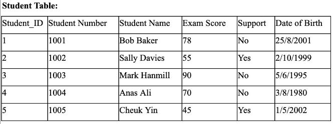
- Following the application of 2NF, we noticed an issue in the course table related to "Exam Boards." Specifically, the relationship where the course name does not uniquely determine the exam boards (for example, the course "Maths" could be associated with both "EDExcel" and "AQA") indicated a violation of the Third Normal Form (3NF) due to transitive dependencies.
Given this situation, it's feasible to address the requirements of both 2NF and 3NF simultaneously:-
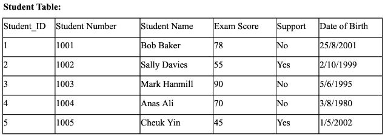
From the results obtained, we have successfully eliminated the transitive dependencies and demonstrated the appearance of the data structure following this integrated normalization process. This method guarantees that each table exclusively contains data that is directly related to the primary key, thus improving the integrity of the database and the efficiency of queries.
Data Build Activities:
Following the normalization exercise described above, we are now prepared to implement these changes at the database management system (DBMS) level.- Creating the ENROLLMENT table and simulating the 1NF table in the database.
- Insert data at the atomic level into the table.
- Implement a sequence for generating unique IDs. 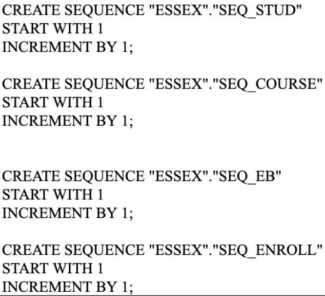
- Create the STUDENT, COURSE, and EXAM_BOARD tables, each equipped with a unique ID. 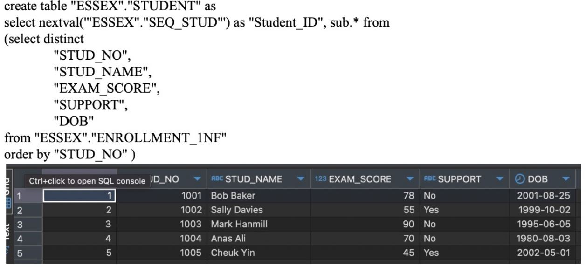
- Establish the Enrolment table, linking it with corresponding IDs from the other tables. 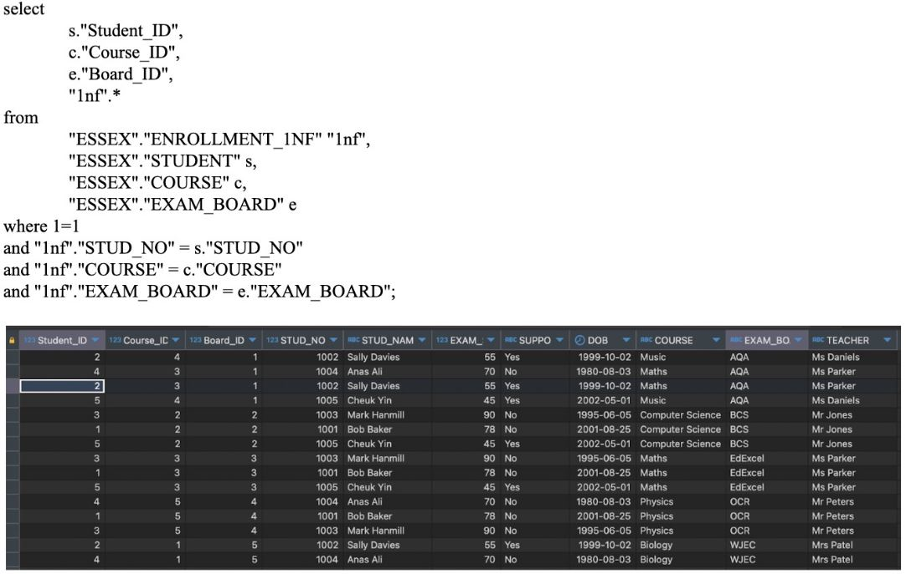
- With the ENROLLMENT table now featuring one primary key and three foreign keys, we can illustrate the relationships between these keys using a UML diagram as shown below:
- Having established corresponding IDs from different tables, we can now merge this information. The SQL query to join these tables might look like this: 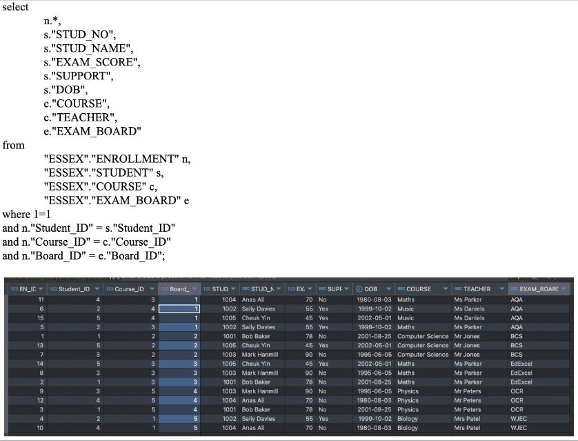
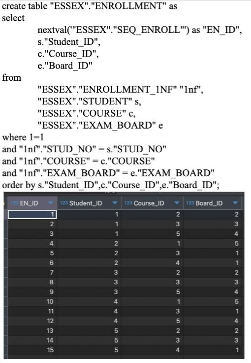
API Security Activities:
Expanding on our grasp of data normalization techniques, it's equally imperative to prioritize API security. Given the prevalent use of APIs for data acquisition, safeguarding these interfaces is critical. APIs are vulnerable to a range of security threats that could undermine data integrity and confidentiality.To fortify API-driven applications against these vulnerabilities, a comprehensive security strategy is indispensable. This includes the deployment of robust security frameworks encompassing authentication, authorization, encryption, and consistent security evaluations. Such measures not only protect data but also bolster the reliability and credibility of API-dependent applications.
When creating an API that supports data sharing, scraping, and connectivity across various formats, consider the following security protocols:
Access Control
Transaction Security
Performance Control
These detailed specifications are designed to reduce risks associated with unauthorized access, data breaches, and service interruptions, thereby establishing a secure and reliable API environment for efficient data exchange.
Future of Big Data Analytics
Finally, this module has explored diverse perspectives on the future of big data analytics. The exponential growth of big data in today's world is undeniable, and its effective management and utilization are pivotal for driving decision-making processes across various sectors. As technology evolves, so too does the landscape of data management, necessitating a deep understanding of which data is useful and how to extract meaningful insights from massive datasets. Overall, this can be divided into four sections:-Technological Advancements in Data Management
Emerging database technologies are reshaping how we store, retrieve, and manage data. Distributed databases facilitate the spreading of data across various locations, enhancing accessibility and efficiency. Object-oriented databases, which store data as objects, offer flexibility and reusability in application development, while image and hypertext databases support the storage and complex querying of non-traditional data formats such as images and interconnected text. Furthermore, graph databases represent a significant shift from traditional relational databases by efficiently mapping complex, interconnected data structures. These technologies reflect a move towards more dynamic, flexible data management systems that can handle the increasing variety and volume of data.
Machine Learning: A Tool for Data Utilization
Machine learning stands as a cornerstone technology in the realm of big data. By training algorithms on vast datasets, patterns and relationships can be discerned, leading to predictive insights that can significantly influence strategic decisions. For instance, in retail, machine learning enables basket analysis to identify purchasing patterns and optimize cross-selling opportunities. In finance, it supports risk assessment for loan approvals by analyzing borrower data against historical outcomes. This capability of machine learning to process and analyze large datasets efficiently not only enhances operational efficiency but also drives innovation across industries.
Best Practices and Reflective Research in Big Data
Adhering to best practices in big data management is crucial. Initiatives should start small but think big, focusing on high-value opportunities that can gradually scale. Avoiding common pitfalls such as overpromising results or neglecting to integrate business insights into technological solutions is essential for sustainable success.
Moreover, reflective research activities are vital for maintaining objectivity and relevance in data analysis. Understanding the specific data needs of an organization and how these relate to achieving business goals ensures that data strategies are aligned with business outcomes. This involves continuous learning and adaptation to new technologies and methodologies, such as integrating advanced data processing technologies like Hadoop and Spark, and exploring emerging fields like blockchain for data integrity and security.
Ethical and Strategic Considerations
As we harness the power of big data, ethical considerations and strategic planning become paramount. Ensuring privacy, securing data, and following regulatory guidelines are not just legal necessities but also critical to maintaining public trust and organizational integrity. Furthermore, the integration of AI and machine learning into data analytics must be approached with a clear understanding of both the potential and the limitations of these technologies.
In Conclusion, the future of big data is intrinsically linked to continuous technological innovation and the strategic foresight of businesses. Leveraging machine learning for data analysis, adopting new database technologies, and maintaining rigorous best practices will be essential for organizations aiming to derive value from their data assets. As big data continues to grow, so too will the opportunities for businesses to innovate, optimize operations, and enhance decision-making processes through data-driven insights. Reflective, ethical research and the application of comprehensive data management strategies will ensure that the use of big data contributes positively to technological advancement and business success.
Reflection
IntroductionAs we reach the end of this module, I've noticed that it differed from others, primarily due to the inclusion of a group assignment. Collaborating with my peers was not only interesting but also enriched my learning experience significantly. In this reflection assignment, I will use Gibbs' Reflective Cycle to outline my journey through the module and highlight the insights gained.
Review and Evaluation
The primary objective of the module was to deepen our understanding of Big Data, focusing on its analysis, transformation into actionable insights, and efficient storage solutions. Throughout the course, we explored a variety of methodologies, technologies, and programming tools designed to enhance our ability to handle large datasets effectively. Key concepts introduced included the Four V's of Big Data, which provide a framework for understanding its complexities; the data wrangling process, which prepares raw data for analysis; and techniques for data scraping and cleaning using Python. Additionally, we delved into data normalisation and modelling to ensure data integrity, and we studied advanced database structures to optimise data storage and retrieval. This comprehensive approach has equipped us with the necessary skills to process and manage Big Data in a professional context.
For our assignment in Unit 6, we were tasked with developing a proposal for constructing a database for a specific area. Leveraging my background that spans both business and technical domains, I was well-equipped to define the comprehensive requirements for this project. This included delineating the logical flow of the system, identifying necessary attributes, and selecting appropriate and scalable technology for the database construction.
Throughout the development of this proposal, I integrated the knowledge acquired from the module with practical insights from my professional experience. This synthesis allowed me to meticulously plan and outline the steps necessary for the database build, which are as follows:
- Conceptualise the Operational Flow: Visualise how the system will operate and start by considering the initial dimensions of the database.
- Define the Data Dictionary: Outline the necessary attributes, detailing each attribute¡¦s role and significance within the database.
- Evaluate the Data Dictionary Structure: Assess the structure of the data dictionary to ensure clarity and functionality.
- Draft the Logical Flow: Create a preliminary version of the logical flow, mapping out how data will move and interact within the system.
- Finalise the Logical Flow: Refine the draft to ensure that the logical flow is efficient and that it aligns seamlessly with the corresponding attributes.
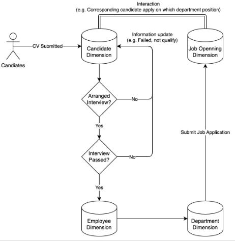
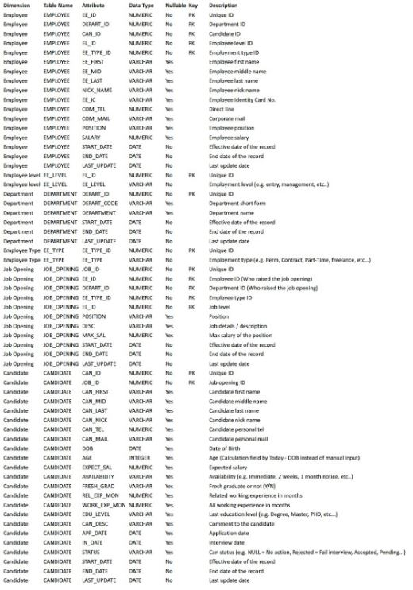
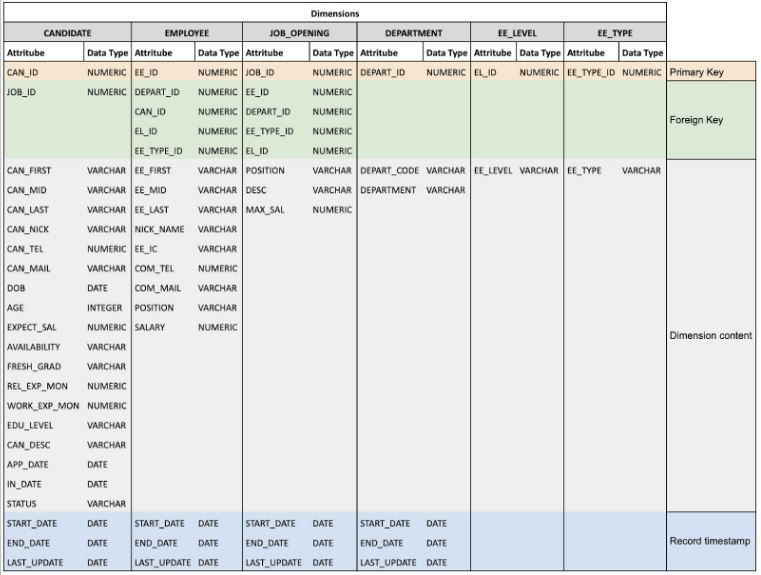
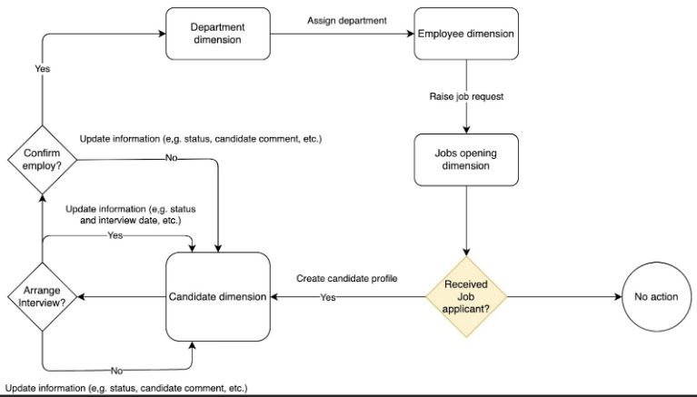
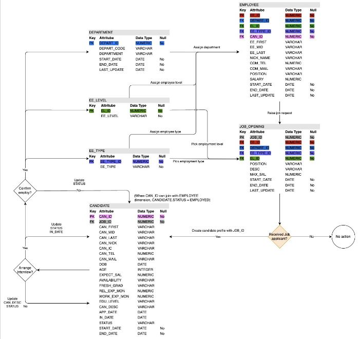
For the executive summary, it offers a comprehensive evaluation of the database development from its inception. Initially, I revisited the design and thoroughly assessed its strengths and weaknesses. This critical review pinpointed four primary areas for improvement that are essential for optimising the database's effectiveness and efficiency:
- Content Enhancement:
- Broaden the scope of attributes across various dimensions to comprehensively enhance the data warehousing process. This expansion is not only about increasing the quantity of data but also about enriching the quality of information captured.
- Proactively design the database to accommodate future enterprise expansion. This includes making the database flexible and scalable to handle increased data volumes and new types of data as the business evolves.
- Structure Enhancement:
- Refine the initial design to enhance risk assessment strategies, thereby minimising the risk of data loss.
- Strengthen the database architecture to function effectively as a disaster recovery site based on the improved structure. This ensures that the system supports business continuity plans, maintaining operations even under adverse conditions.
- Cost Efficiency and Alternatives:
- Conduct a thorough evaluation of the cost-effectiveness of the current database construction. This analysis should consider not only the initial costs but also long-term operational expenses.
- Offer alternative strategies to the enterprise, based on the enhanced model, which could provide more value or reduce costs.
- Compliance:
- Address compliance issues by advising on key regulations pertinent to the database.
- Advise the enterprise for necessary actions to ensure compliance with these regulations.
Conclusion, Feelings and Action Plan
Reflecting on the roadmap and assessments from the module, I initially anticipated a straightforward experience given its close alignment with my job responsibilities. However, as I delved deeper into the coursework, my perspective shifted. This wasn't merely about ease or familiarity; despite the relevance of my existing skills, the module introduced numerous theoretical concepts and techniques that enriched my professional practice.
This educational journey highlighted the importance of humility in learning. It reminded me that revisiting familiar theories and technologies can uncover new insights or previously overlooked details. This approach not only broadened my understanding but also opened opportunities for personal and professional growth. It has taught me the value of maintaining an open and humble mindset towards continuous learning, enabling me to enhance my work and approach known subjects with a fresh perspective.
Furthermore, the group assessment also proved to be a valuable experience, differing significantly from my usual approach. Typically, I prefer to lead projects with a clear plan in mind, executing tasks quickly and adhering strictly to the outlined strategy. This method, while efficient, sometimes results in less collaboration and can inadvertently create friction among team members.
Through this group assessment, I recognized the need to adjust my approach. It became clear that actively listening to others' opinions is crucial. Everyone's perspective is not only valid but also necessary, as it mirrors the process of revisiting familiar knowledge at different stages, potentially sparking innovative and insightful ideas.
Overall, this experience has not only been a lesson in the technical aspects of my field but also in the essential patterns and attitudes necessary for continuous learning and effective collaboration. It has reinforced the importance of adaptability, openness, and respect for diverse viewpoints in my professional development. Moving forward, I am committed to applying these principles to foster an inclusive and innovative work environment, ensuring both personal and team growth.